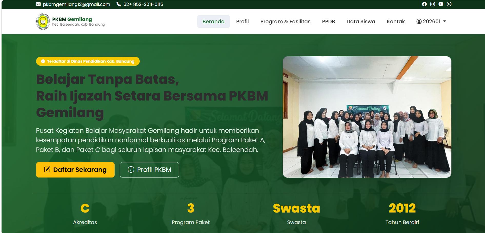
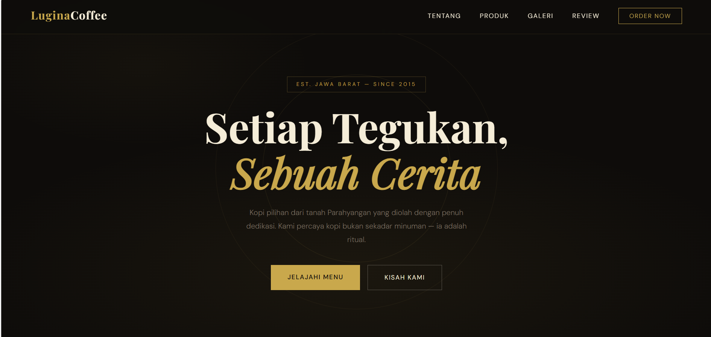
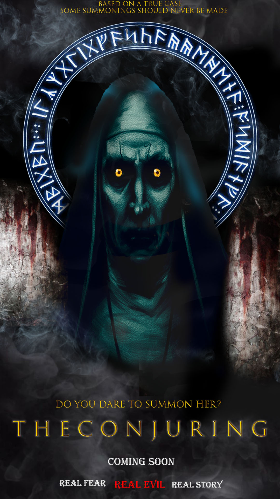

Mahasiswa Teknik Informatika semester 2. Belum punya sertifikat, tapi punya rasa ingin tahu yang tidak pernah mati — dan satu proyek nyata yang membuktikannya.
Saya baru memulai perjalanan di dunia Teknik Informatika — semester 2, tanpa sertifikat, tanpa daftar prestasi panjang. Tapi saya percaya progres lebih jujur daripada gelar.
Ketertarikan saya pada web development tumbuh dari kebiasaan saya bermain game taktis: saya suka memahami sistem, mencari pola, dan menyusun strategi langkah demi langkah. Coding terasa seperti perpanjangan alami dari cara saya berpikir.
Bukan sertifikat — tapi inilah perlengkapan yang saya pakai setiap hari untuk belajar dan membangun.
Empat operasi yang sudah saya selesaikan — dari pengembangan web sampai desain grafis. Bukti, bukan klaim.

Dibuat untuk memenuhi tugas UAS mata kuliah Dasar Pemrograman Web. Website profil lembaga pendidikan nonformal — lengkap dengan halaman profil, program & fasilitas, PPDB, hingga data siswa.

Dibuat untuk tugas praktikum mata kuliah Dasar Pemrograman Web. Landing page kedai kopi dengan tema gelap & elegan, lengkap dengan section Tentang, Produk, Galeri, dan Review.

Dibuat untuk tugas praktikum mata kuliah Komputer Grafis. Mendesain ulang poster film horor dengan komposisi gelap, tipografi tegas, dan nuansa mencekam yang sesuai genre.
Dibuat untuk tugas praktikum mata kuliah Komputer Grafis. Menggabungkan beberapa elemen gambar menjadi satu komposisi baru yang terlihat menyatu secara pencahayaan dan perspektif.
* Ganti link "LIVE DEMO" / "SOURCE CODE" / "LIHAT HASIL" di atas sesuai link asli project kamu.
PUBG, Point Blank, dan BloodStrike bukan cuma hiburan — mereka melatih cara berpikir yang saya bawa ke dunia coding.
Memprediksi pergerakan zona aman melatih saya berpikir beberapa langkah ke depan — kebiasaan yang sama saat merancang alur (flow) sebuah aplikasi.
Koordinasi peran dalam tim mengajarkan komunikasi yang jelas — modal penting saat kolaborasi lewat Git & GitHub.
Situasi clutch mengajarkan saya tetap fokus saat tertekan — sikap yang sama dibutuhkan saat berburu satu bug yang tersembunyi.
Belum punya sertifikat — tapi ini progres yang sedang berjalan, terbuka untuk dilihat siapa saja.
Terbuka untuk obrolan soal proyek, kolaborasi, atau kesempatan magang. Hubungi lewat saluran berikut, atau kirim pesan langsung.